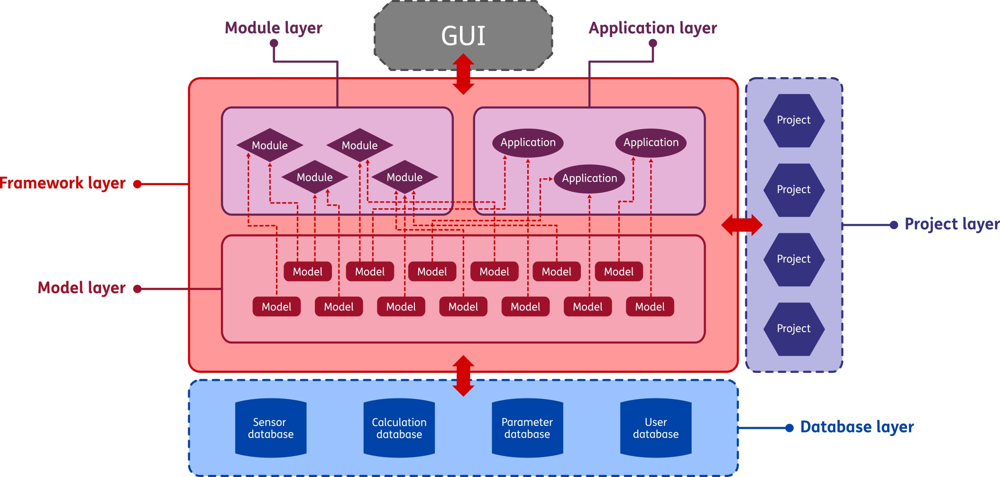
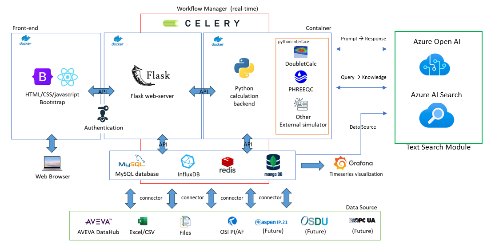

1.1. GEMINI architecture
GEMINI is a software framework for modeling and real-time monitoring of geothermal assets. This page gives a high-level overview of the platform architecture. The architecture is described from two perspectives:
Functional architecture: platform layers and their responsibilities
Technical architecture: software components and infrastructure
1.1.1. Functional architecture
Fig. 1.1 shows the functional layers of GEMINI and their interactions. The platform consists of:
The framework layer
The model layer
The module layer
The application layer
The project layer
The database layer
A Graphical User Interface (GUI)
The following subsections describe each layer.
{kind=link}

Fig. 1.1 Overview of the functional architecture of the GEMINI digital twin framework.
1.1.1.1. Framework layer
The framework is the foundation of GEMINI. It provides shared services that connect all internal and external components. Examples include scheduling, database I/O, and project lifecycle actions (create, open, save).
1.1.1.2. Model layer
The model layer contains computational models used by GEMINI. A model maps inputs to outputs and can be:
static (pure input-output)
dynamic (state is updated at each execution)
Examples include well VLP, fluid PVT, and erosion calculations.
1.1.1.3. Module layer
A module is a scheduled collection of one or more models that provides a specific utility. Modules run automatically at fixed intervals (for example, every 5 minutes or hourly). A typical module computes KPIs such as injectivity index using recent data.
1.1.1.4. Application layer
Like modules, applications combine models and logic, but they run on demand. Applications are designed for interactive analysis, parameter tuning, and scenario exploration.
In practice, modules are mostly “set and run”, while applications require direct user interaction.
1.1.1.5. Project layer
A project is a saved digital twin configuration for a specific system scope: full doublet, single well, or even a single asset (for example an ESP). Project settings and parameters are persisted and restored when reopened.
1.1.1.6. Database layer
The database layer contains:
plant data (real-time measurements)
calculated data
plant/project parameters
user/account information
Database implementations can differ per plant and are therefore external to the generic GEMINI core.
1.1.1.7. Graphical User Interface
The GUI (Graphical User Interface) is the visual interaction layer on top of GEMINI.
1.1.1.8. Internal vs. external layers
GEMINI distinguishes between internal (general-purpose) and external (plant-specific) layers. In Fig. 1.1, internal layers use solid outlines and external layers use dashed outlines. Internal layers are part of the open-source scope.
1.1.2. Technical architecture
Fig. 1.2 shows the software packages and tools that implement GEMINI functionality. The technical architecture includes:
The back-end
The front-end
The workflow manager
The databases
The subsections below describe each part.
{kind=link}

Fig. 1.2 Overview of the technical architecture of the GEMINI digital twin framework.
1.1.2.1. Back-end
The back-end performs data processing, scheduling, and model calculations. It connects the functional layers and exposes services to the front-end. The core back-end is implemented in Python.
Front-end/back-end communication is handled using Flask.
1.1.2.2. Front-end
The front-end includes the web interface used by end users. It is built with HTML/CSS (Bootstrap) and JavaScript (React), and is hosted in an Azure-based deployment. Authentication secures access to back-end services.
1.1.2.3. Workflow manager
The workflow manager ensures periodic data retrieval and scheduled module execution. GEMINI uses Celery for this purpose.
1.1.2.4. Databases
The database layer provides access to plant data and parameter storage. Time series streaming is typically handled with InfluxDB, and relational configuration data with MySQL. Future integration with OSDU is planned.